Schichtpläne für Betriebe, die rund um die Uhr arbeiten – gerechnet aus Ihrem Schichtmodell und geprüft gegen das Arbeitszeitgesetz.
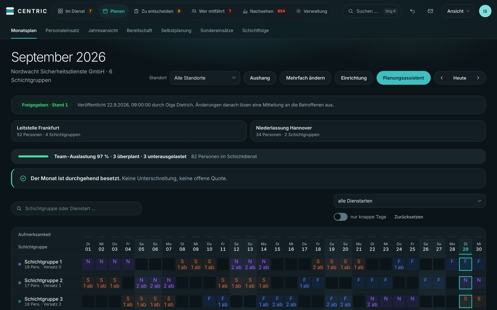
CENTRIC ist eine Anwendung für die Dienst- und Schichtplanung. Sie ist für Betriebe gemacht, die rund um die Uhr Dienste besetzen – etwa im Sicherheitsdienst, in Pflege und Klinik oder mit eigenem Fahrpersonal.
Jede Planung kennt die Aufgabe: Alle Schichten sollen besetzt sein, Ruhezeiten eingehalten, die richtigen Qualifikationen an der richtigen Stelle. Und wenn jemand ausfällt, muss es schnell gehen.
CENTRIC rechnet den Plan aus Ihrem Schichtmodell, prüft ihn gegen das Arbeitszeitgesetz und zeigt jeden Morgen, was ansteht. Fällt jemand aus, sehen Sie die Lücke und passende Vorschläge. Ihr Team sieht den eigenen Plan auf dem Handy.
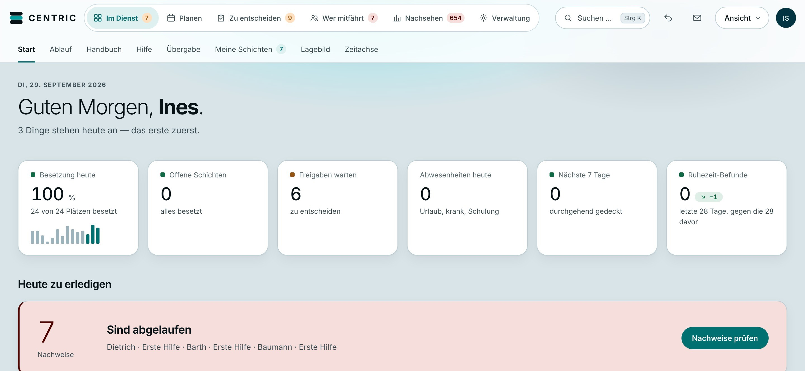
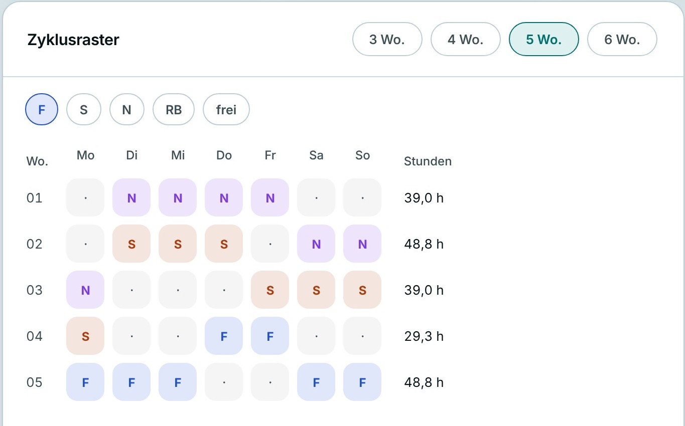
Sie hinterlegen Ihr Schichtmodell einmal als Zyklus, zum Beispiel über fünf Wochen. CENTRIC berechnet daraus den Plan für jeden einzelnen Tag – ohne Jahresgrenze.
Wochenarbeitszeit, Deckungslücken und Dienste am Stück stehen gleich daneben.
Alle Schichtgruppen und Standorte in einem Raster. Ein Hinweis zeigt sofort, ob der Monat durchgehend besetzt ist. Freigegebene Pläne erhalten einen Stand – Änderungen danach lösen eine Mitteilung an die Betroffenen aus.
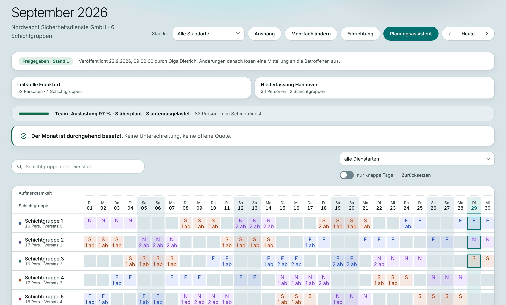
CENTRIC prüft Mindestbesetzung, Qualifikationen, Ruhezeit, Dienst- und Nachtfolgen, Abwesenheiten, Urlaube und die Schutzvorschriften für Jugendliche, Schwangere und schwerbehinderte Menschen.
Jeder Befund nennt die Vorschrift. Der Regelstand wird mit jeder Planänderung festgehalten.
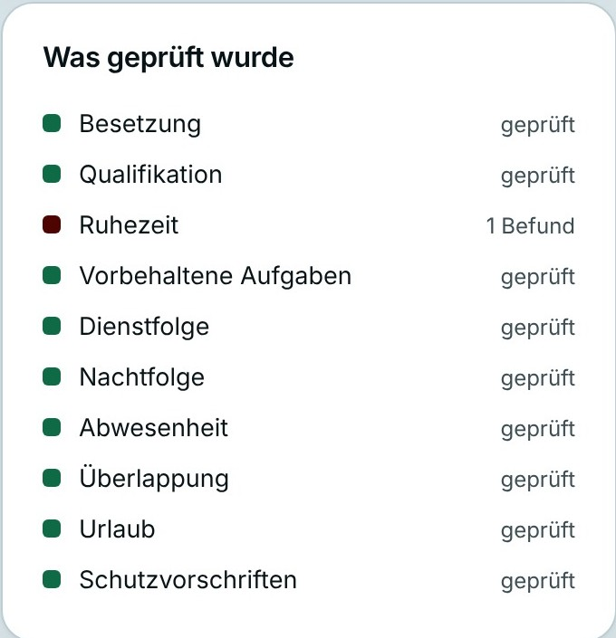
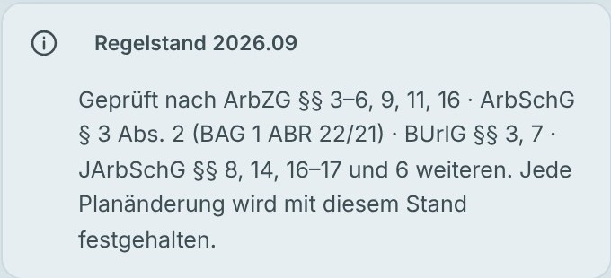
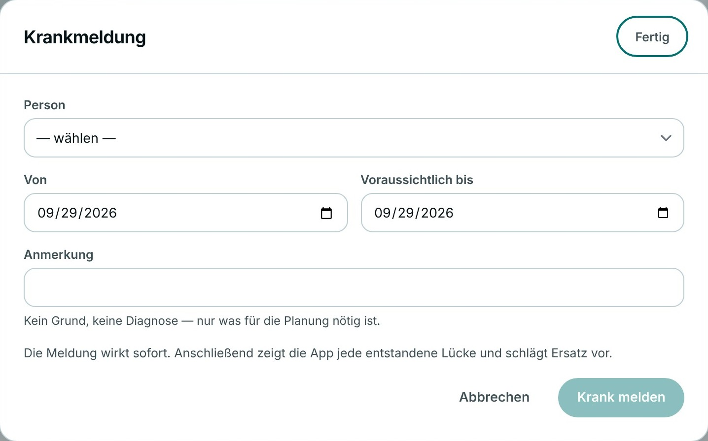
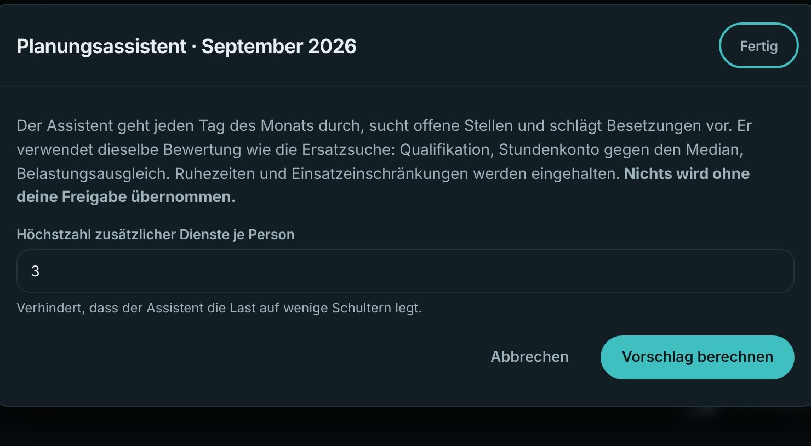
Eine Krankmeldung braucht keinen Grund und keine Diagnose. Sie wirkt sofort: CENTRIC zeigt jede entstandene Lücke und schlägt Ersatz vor.
Der Planungsassistent füllt offene Stellen im ganzen Monat – nach Qualifikation, Stundenkonto und Belastungsausgleich. Übernommen wird nur, was Sie freigeben.
Beschäftigte sehen ihren Plan auf dem Handy, stempeln zum Dienst ein, melden sich krank, beantragen frei und übernehmen Dienste aus der Tauschbörse. Die Entscheidung bleibt bei der Planung.
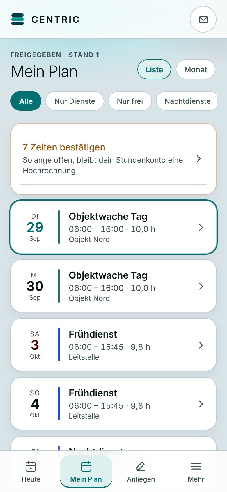
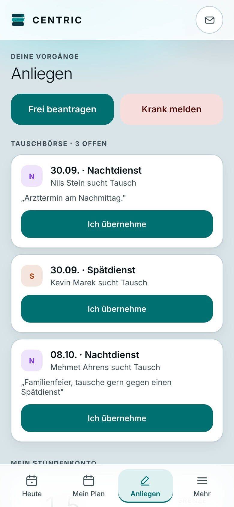
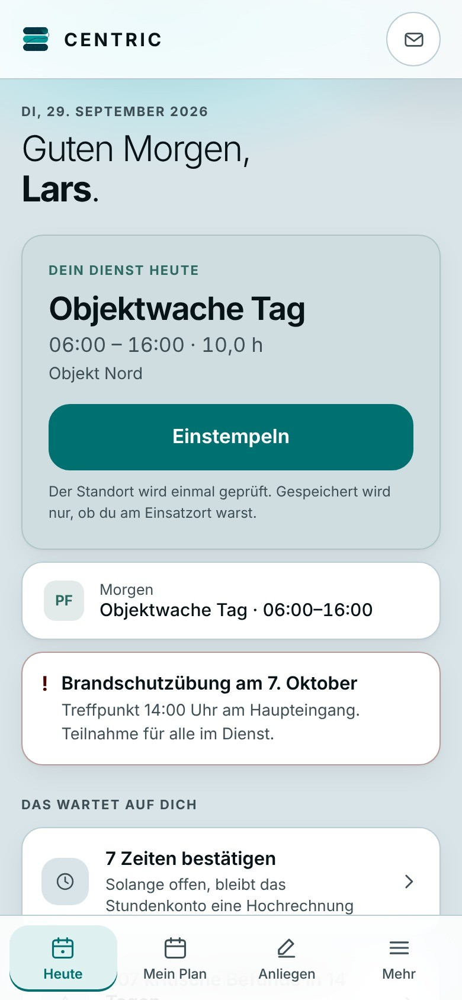
Wer kann was – und wo hängt eine Qualifikation an zu wenigen Personen? CENTRIC zeigt die Abdeckung je Schichtgruppe, bevor ein Engpass erst bei der Krankmeldung auffällt.
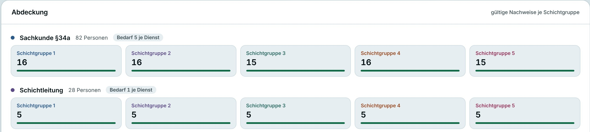
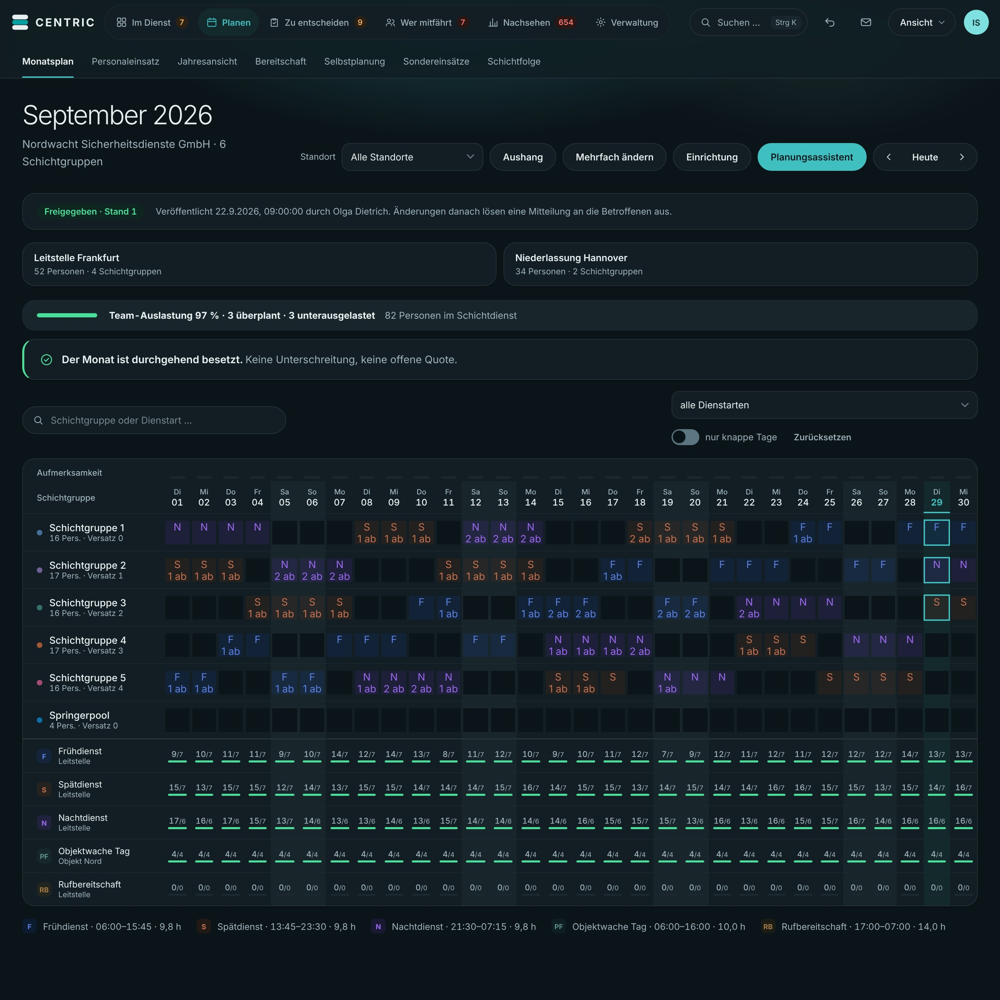
Am Schreibtisch der Planung wie um drei Uhr nachts auf dem Handy: CENTRIC gibt es in heller und dunkler Ansicht. Alles liegt an einem Ort.
Für Betriebe, die Dienste rund um die Uhr besetzen – und für die Menschen, die diese Dienste leisten.
Objektwachen, Leitstellen, Alleindienste. Sie sehen, ob die Sachkunde nach § 34a auf jeder Schicht vorhanden ist. Notrufe aus Alleindiensten bleiben stehen, bis jemand bestätigt.
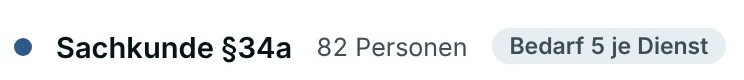
Die Pflegepersonaluntergrenzen gelten je Schicht, nicht im Monatsmittel. CENTRIC prüft sie gegen die tatsächliche Belegung – ebenso die PPP-RL für die Psychiatrie.
Lenkzeit, Unterbrechung und Ruhezeit nach der Verordnung (EG) 561/2006 und der FPersV – so, wie der Tachograf sie aufgezeichnet hat.
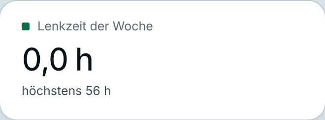
Der eigene Plan, Tausch, Wünsche und Krankmeldung auf dem Handy. Beim Einstempeln wird nur gespeichert, ob jemand am Einsatzort war.
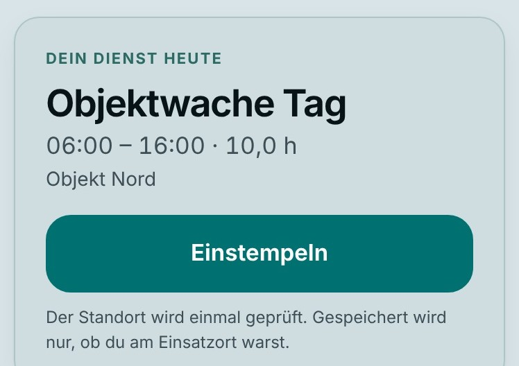
Aus einem Schichtmodell entsteht jeder Monat – ohne Kopieren und ohne Jahresgrenze.
Ruhezeit, Besetzung und Schutzvorschriften werden für jeden Tag geprüft – mit der passenden Vorschrift.
CENTRIC schlägt Ersatz und Besetzungen vor. Übernommen wird nur, was Sie freigeben.
Qualifikationen und ablaufende Nachweise je Schichtgruppe – bevor eine Krankmeldung die Lücke aufdeckt.
Tausch, Wünsche, Anträge und Krankmeldungen kommen geordnet aus der Handy-Ansicht.
Alle Daten jederzeit vollständig und in offenem Format – ohne Sperre, Gebühr oder Antrag.
Nichts wird ohne Ihre Freigabe übernommen.
Wir beantworten Ihre Fragen zu CENTRIC gern persönlich.